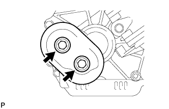
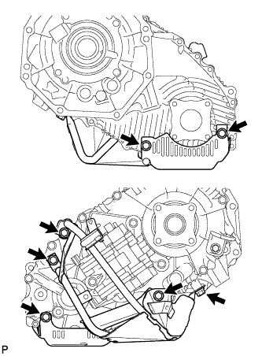
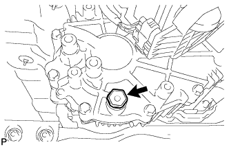
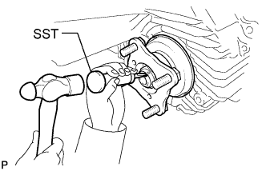
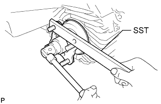
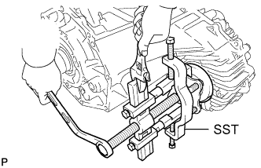
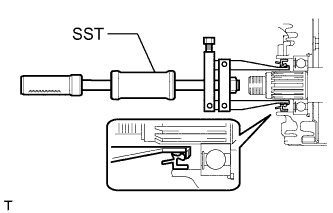
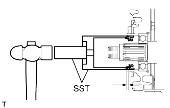
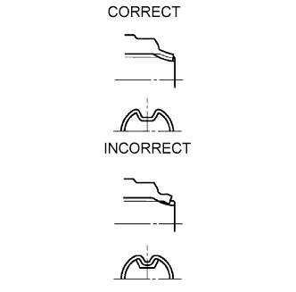

TRANSFER CASE FRONT OIL SEAL > REPLACEMENT |
| 1. DRAIN TRANSFER OIL |
 |
except 1GR-FE:
Remove the 2 bolts and transfer dynamic damper.
 |
Remove the 4 bolts and transfer heat insulator.
 |
Remove the 7 bolts and lower transfer case protector.
 |
Remove the filler plug and gasket.
 |
Remove the drain plug and gasket, and drain the transfer oil.
| 2. REMOVE FRONT PROPELLER SHAFT ASSEMBLY |
Remove the front propeller shaft assembly (Click here).
| 3. REMOVE FRONT OUTPUT SHAFT COMPANION FLANGE SUB-ASSEMBLY |
 |
Using SST and a hammer, release the staked part of the nut.
 |
Using SST to hold the companion flange, remove the lock nut.
 |
Using SST, remove the companion flange.
Remove the O-ring from the companion flange.
| 4. REMOVE TRANSFER CASE FRONT OIL SEAL |
 |
Using SST, tap out the oil seal.
| 5. INSTALL TRANSFER CASE FRONT OIL SEAL |
Apply transfer oil to the spline of the driven sprocket.
 |
Using SST and a hammer, tap in a new oil seal until its surface is 1 to 1.5 mm (0.0394 to 0.0590 in.) from the case upper surface.
| 6. INSTALL FRONT OUTPUT SHAFT COMPANION FLANGE SUB-ASSEMBLY |
Install the companion flange onto the drive sprocket.
Using SST to hold the companion flange, install a new O-ring and a new companion flange lock nut.
 |
Using a chisel and hammer, stake the companion flange lock nut.
| 7. INSTALL FRONT PROPELLER SHAFT ASSEMBLY |
Install the front propeller shaft assembly (Click here).
| 8. ADD TRANSFER OIL |
Install a new gasket onto the drain plug and then install the plug.
 |
Add oil so that the oil level is between 0 to 5.0 mm (0 to 0.197 in.) from the bottom lip of the filler plug hole.
Wait approximately 5 minutes and check that the oil level has not changed.
|
Install a new gasket onto the filler plug and then install the plug.
Install the lower transfer case protector with the 7 bolts.
|
Install the transfer heat insulator with the 4 bolts.
except 1GR-FE:
Install the transfer dynamic damper with the 2 bolts.
| 9. CHECK FOR TRANSFER OIL LEAK |